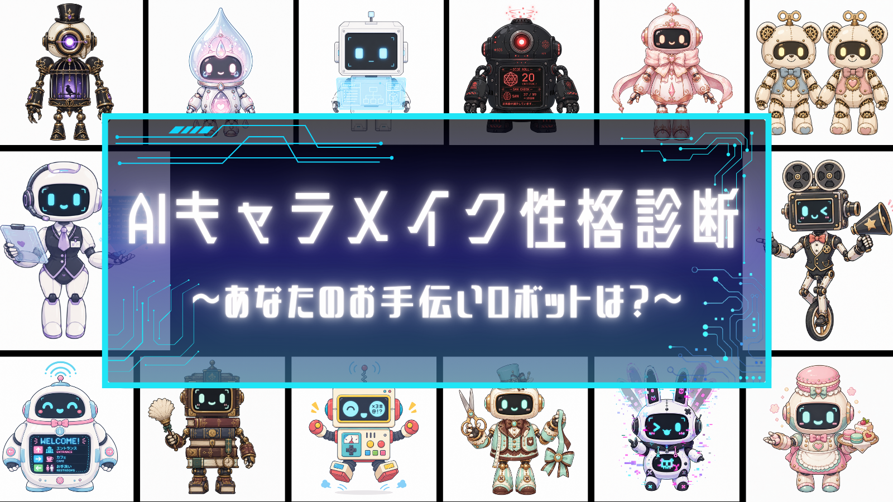

あなたのキャラメイクOSを解析します。
AIチャットキャラを作るあなたへ。
あなたは設定を緻密に組むタイプ？会話の空気感で魅せるタイプ？
15問で、あなたのキャラメイク癖を32タイプのロボットとして診断します。
5つの解析パラメーター（詳しく見る）
① 設計
構造派(C)：コード重視 / 文体派(L)：ト書き重視
② 対象
汎用型(F)：全方位受容 / 固定型(D)：特定関係性重視
③ 展開
シナリオ(P)：ギミック誘導 / サンドボックス(S)：終わらない日常
④ 制御
堅牢型(G)：徹底防御 / 寛容型(O)：ライブ感許容
⑤ 動機
自給自足(M)：己の理想 / おもてなし(Y)：ユーザー体験
質問テキスト
ANALYSIS COMPLETE
TYPE
タイトル
ロボット名
AIチャット制作スタイル診断
【キャラクターづくりへの姿勢】
【躓きやすいポイント】
【相性データ】※タップで図鑑を開く
- 共鳴する魂
- 相互補完
- 刺激的な異文化
- すれ違い注意
DATABASE // 全32タイプ図鑑
TYPE
タイトル
ロボット名